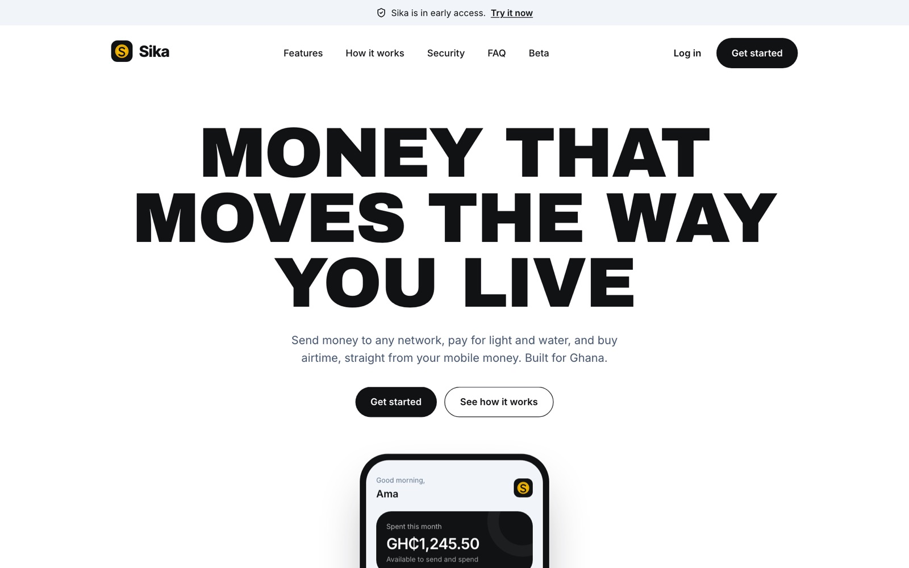
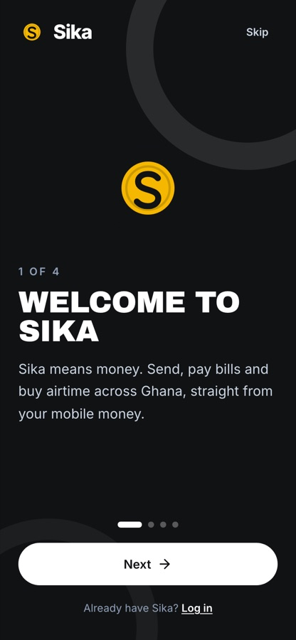
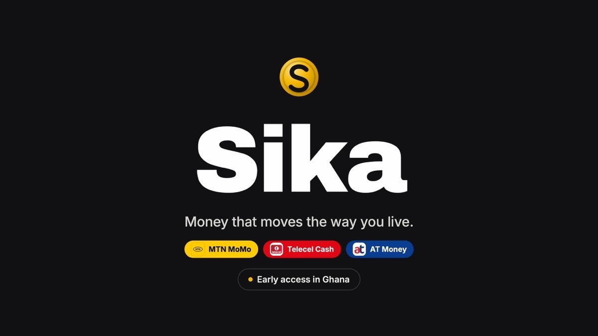

Case study · Fintech
Sika — money that moves the way you live
A fintech app for Ghana: a wallet you fund from mobile money, transfers to any network, and payments for electricity, water and airtime. Underneath it is a double-entry ledger, the same principle an accountant uses, so every cedi can be traced and every balance checked.

01The problem
In Ghana, most everyday payments already run on mobile money, but they're split across networks and apps. Sending to someone on a different network, paying the ECG or water bill and topping up airtime can each mean a different menu, a different fee and a different receipt.
I wanted one place to do all of it, built so that the money side is trustworthy: balances that can't drift, payments that can't be applied twice, and a full trail behind every transaction.
02What I built
Wallet
Fund it from MTN MoMo, Telecel Cash or AT Money, link accounts and request money.
Send money
Transfers to people on any network, with saved recipients and a voice-assisted send option.
Bills & airtime
ECG electricity, Ghana Water and airtime top-ups from the same balance.
Notifications
SMS receipts sent through an outbox, so a failed message is retried rather than lost.
03How it works
Sika is a monorepo with a Next.js and Tailwind front end, an Express API and a PostgreSQL database. Payments come in through Paystack and SMS goes out through Arkesel.
- Double-entry ledger in the database. Every transaction is a journal entry with at least two postings that sum to zero; the database rejects any entry that doesn't balance.
- Amounts in pesewas, never decimals. Money is stored as whole numbers, so totals never pick up rounding errors.
- Append-only history. Postings are never edited or deleted. A mistake is corrected with a reversing entry, just as in a set of books.
- Safe to retry. Each payment carries an idempotency key, so if Paystack sends the same confirmation twice, the wallet is credited once.
- Built-in reconciliation. A check compares every cached balance with its postings and lists any account that disagrees. Mismatched or suspicious deposits go to a suspense account for review.
04Screens


05What I took from it
Building Sika showed me how directly accounting carries over into software. Debits, credits, reversing entries and reconciliation aren't just exam topics; they're the rules that keep a payments system honest. Writing them into the database itself means no part of the app can break them by accident.
Next: learning from beta testers and widening early access.
More work